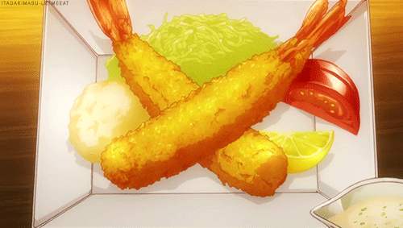

¿Qué es la Tempura?
La tempura es una técnica de cocina muy popular en todo el mundo.
Consiste en cubrir una serie de ingredientes (que suelen ser verduras o pescado) con un fino y crujiente rebozado.
Se suele acompañar de fideos udon o arroz.
Este método culinario fue introducido en Japón allá por el año 1600 por los portugueses.
En la actualidad, es un plato que ha ido cambiando con el paso de los años adaptándose a los gustos japoneses.
También se suele encontrar en los bento box.

La versión más famosa de este plato es aquella que tiene los ingredientes cocinados y colocados en el plato de
una forma que llame la atención de nuestros ojos y haga que queramos empezar a comerlo de inmediato.
Es un plato sencillo de preparar, ya que solo necesitaras algunos langostinos y tus verduras favoritas
como pueden ser la zanahoria, pimiento, berenjena, calabacín, batata…
A continuación, te guiaremos paso a paso para que puedas preparar tempura de
langostinos desde casa. ¡Una receta fácil y muy sabrosa!